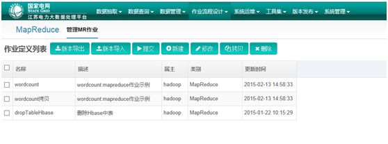

行业动态
大数据在电信行业的应用

公司产品
iThinkCool思酷-企业级大数据创新平台
行业解决方案
国家电网某省公司解决方案
大数据在电信行业的应用
iThinkCool思酷-企业级大数据创新平台
国家电网某省公司解决方案
Hadoop大数据计算框架改变了对于大规模数据分析的技术方法。大数据作为企业敏感的数据资产，如何利用与有效管理？加之Hadoop分析人才，特别是优秀的平台优化运维人员的匮乏，给企业挖掘大数据价值带来挑战。
思酷：构建于IaaS x86低成本云环境，基于业界主流分布式计算框架之上开发的，为企业大数据分析人员和运维人员提供可管，可控，可运营，易操作的大数据备份存储与分析环境，为企业解决了人才，管理与运维问题，使企业从集约化运营中获益。我们提供完整的Hadoop计算环境，在X86平台上部署并提供数据分析，日常运维，环境优化等服务。
同时，我们提供数据挖掘服务，为企业最大限度的发现数据价值。
我们提供基于传统数据与大数据融合的智能化数据中心框架解决方案与咨询服务。
我们提供从数据采集，转换，融合，数据服务，数据应用等端到端咨询，实施，运维，优化服务。
我们提供数据应用SaaS的能力封装与开放式创新平台建设服务。
我们提供分析展现工具－Colorful Viewer，实现快速的数据报告，OLAP分析。支持PC，iOS，Android的展现与分析。
“智酷云”提供企业，政府，公众用户提供大数据与传统数据及互联网数据采集汇聚，存储与计算，数据服务与创新于一体的大数据服务管理创新云。用户可以在数据酷云上获得安全的大数据计算服务和创新基于数据的应用服务。
亲子医生，作为面向孕妇，儿童及青少年的移动医疗服务平台，是传统医疗模式向移动互联网模式的延伸。旨在建立可信任的医患关系，建立全新的医患社会信任，推动移动互联网医疗的发展。亲子医生，作为从“陌生问诊机制”向“熟人医患关系”转型的全新移动医疗服务产品，有着传统医疗不可替代的优势，它是传统医疗的有力补充。
为国网某省公司下属的部门、单位，提供大数据存储与计算，运营管理与数据服务，同时优化大数据相关人才的组织结构管理，改善了企业数据资产集约化管理的能力，提升企业大数据创新服务能力，加快了信息化企业建设步伐。
利用iMaya系统为国电内部企业与部门提供大数据运维，安全，开发等可视化服务。国电内部至少8 家企业单位，构建配网运行数据分析，用户电量分析，IT 系统与网络安全风险评估分析等应用。
一个大数据平台，一套运维人员，多个企业内部用户，简单易用的开发环境和运维环境。

减少重复建设，汇聚大数据人才资源，集约化管理，降本增效。
实现对危险品运输车辆的有效监管，由原来的事后处置变为主动预警干预，保障了危险品运输的安全可靠，可监管。
实现客运班线及包车在人、车、户、线的动态式监管，从而为合理规划线路，合理资源配置，提供帮助。利用大数据相关技术与分析手段，将推动交通行业的管理运营模式的转变,实现智慧交通。
本项目通过对C网用户业务话单（非HTTP方式上网的话单）和网络话单（HTTP方式上网的话单）的加载及业务逻辑汇总，实现对C网用户的上网行为分析。
亲子医生，作为面向孕妇，儿童及青少年的移动医疗服务平台，是传统医疗模式向移动互联网模式的延伸。旨在建立可信任的医患关系，建立全新的医患社会信任，推动移动互联网医疗的发展。亲子医生，作为从“陌生问诊机制”向“熟人医患关系”转型的全新移动医疗服务产品，有着传统医疗不可替代的优势，它是传统医疗的有力补充。
用户管理即医生对患者的管理。用户管理包括几大特色功能：会诊医生添加、患者转诊、会诊医生收益分配、患者随访计划增删改查、会诊群、用户信息查询等。
“智酷云”提供企业，政府，公众用户提供大数据与传统数据及互联网数据采集汇聚，存储与计算，数据服务与创新于一体的大数据服务管理创新云。用户可以在数据酷云上获得安全的大数据计算服务和创新基于数据的应用服务。
“北京融智辉腾科技有限公司”成立于2014年4月，是一家专注于数据智能化解决方案的高科技创新企业。总部位于北京，设有上海办事处，北京产品设计与解决方案中心，并依托武汉东湖新技术开发区在政策、人才等方面的优势，设立了武汉研发与交付中心。
主要从事基于大数据的产品与应用创新，同时致力于基于大数据服务云的研发与运营服务。为客户提供基于数据智能化的解决方案，在交通，电信，能源，教育、移动互联网等行业有非常好的实践与成功案例。公司专业化的服务团队提供从数据探索与运营、规划咨询、系统建设与优化、平台运维等的一系列专业化服务。
公司核心技术与管理团队来自世界著名的IT与互联网公司，85%的团队为技术工程师。
来源: www.leiphone.com
本文作者傅志华先生（公众号：傅志华）曾为腾讯社交网络事业群数据中心总监以及腾讯公司数据协会会长。在腾讯前，曾就职于艾瑞市场咨询、易观国际、中国互联网协会，并任DCCI互联网数据中心副总裁。
电信与媒体市场调研公司Informa Telecoms & Media在2013年的调查结果显示，全球120家运营商中约有48%的运营商正在实施大数据业务。该调研公司表示，大数据业务成本平均占到运营商总IT预算的10%，并且在未来五年内将升至23%左右，成为运营商的一项战略性优势。可见，由流量经营进入大数据运营已成为大势所趋。
电信运营商拥有多年的数据积累，拥有诸如财务收入、业务发展量等结构化数据，也会涉及到图片、文本、音频、视频等非结构化数据。从数据来源看，电信运营商的数据来自于涉及移动语音、固定电话、固网接入和无线上网等所有业务，也会涉及公众客户、政企客户和家庭客户，同时也会收集到实体渠道、电子渠道、直销渠道等所有类型渠道的接触信息。整体来看，电信运营商大数据发展仍处在探索阶段。
目前国内运营商运用大数据主要有五方面：（1）网络管理和优化，包括基础设施建设优化和网络运营管理和优化；（2）市场与精准营销，包括客户画像、关系链研究、精准营销、实时营销和个性化推荐；（3）客户关系管理，包括客服中心优化和客户生命周期管理；（4）企业运营管理，包括业务运营监控和经营分析；（5）数据商业化指数据对外商业化，单独盈利。

（1）基础设施建设的优化。如利用大数据实现基站和热点的选址以及资源的分配。运营商可以通过分析话单和信令中用户的流量在时间周期和位置特征方面的分布，对2G、3G的高流量区域设计4G基站和WLAN热点；同时，运营商还可以对建立评估模型对已有基站的效率和成本进行评估，发现基站建设的资源浪费问题，如某些地区为了完成基站建设指标将基站建设在人际罕至的地方等。
（2）网络运营管理及优化。在网络运营层面，运营商可以通过大数据分析网络的流量、流向变化趋势，及时调整资源配置，同时还可以分析网络日志，进行全网络优化，不断提升网络质量和网络利用率。
利用大数据技术实时采集处理网络信令数据，监控网络状况，识别价值小区和业务热点小区，更精准的指导网络优化，实现网络、应用和用户的智能指配。由于用户群的不同，不同小区对运营商的贡献也不同。运营商可以将小区的数据进行多维度数据综合分析，通过对小区VIP用户分布，收入分布，及相关的分布模型得到不同小区的价值，再和网络质量分析结合起来，两者叠加一起，就有可能发现某个小区价值高，但是网络覆盖需要进一步提升，进而先设定网络优化的优先级，提高投资效率。
德国电信建立预测城市里面的各区域无线资源占用模型，根据预测结果，灵活的提前配置无线资源，如在白天给CBD地区多分配无线资源，在晚上，则给酒吧地区多分配无线资源，使得无线网络的运行效率和利用率更高。
法国电信通过分析发现某段网络上的掉话率持续过高，借助大数据手段诊断出通话中断产生的原因是网络负荷过重造成，并根据分析结果优化网络布局，为客户提供了更好的体验，获得了更多的客户以及业务增长。
（1）客户画像。运营商可以基于客户终端信息、位置信息、通话行为、手机上网行为轨迹等丰富的数据，为每个客户打上人口统计学特征、消费行为、上网行为和兴趣爱好标签，并借助数据挖掘技术（如分类、聚类、RFM等）进行客户分群，完善客户的360度画像，帮助运营商深入了解客户行为偏好和需求特征。
（2）关系链研究。运营商可以通过分析客户通讯录、通话行为、网络社交行以及客户资料等数据，开展交往圈分析。尤其是利用各种联系记录形成社交网络来丰富对用户的洞察，并进一步利用图挖掘的方法来发现各种圈子，发现圈子中的关键人员，以及识别家庭和政企客户；或者分析社交圈子寻找营销机会。如在一个行为同质化圈子里面，如果这个圈子大多数为高流量用户，并在这个圈子中发现异网的用户，我们可以推测该用户也是高流量的情况，便可以通过营销的活动把异网高流量的用户引导到自己的网络上，对其推广4G套餐，提升营销转化率。总之，我们可以利用社交圈子提高营销效率，改进服务，低成本扩大产品的影响力。
（3）精准营销和实时营销。运营商在客户画像的基础上对客户特征的深入理解，建立客户与业务、资费套餐、终端类型、在用网络的精准匹配，并在在推送渠道、推送时机、推送方式上满足客户的需求，实现精准营销。如我们可以利用大数据分析用户的终端偏好和消费能力，预测用户的换机时间尤其是合约机到期时间，并捕捉用户最近的特征事件，从而预测用户购买终端的真正需求，通过短信、呼叫中心、营业厅等多种渠道推送相关的营销信息到用户手中。
（4）个性化推荐。利用客户画像信息、客户终端信息、客户行为习惯偏好等，运营商可以为客户提供定制化的服务，优化产品、流量套餐和定价机制，实现个性化营销和服务，提升客户体验与感知；或者在应用商城实现个性化推荐，在电商平台实现个性化推荐，在社交网络推荐感兴趣的好友。
（1）客服中心优化。客服中心是运营商和客户接触较为频繁的通道，因此客服中心拥有大量的客户呼叫行为和需求数据。我们可以利用大数据技术可以深入分析客服热线呼入客户的行为特征、选择路径、等候时长，并关联客户历史接触信息、客户套餐消费情况、客户人口统计学特征、客户机型等数据，建立客服热线智能路径模型，预测下次客户呼入的需求、投诉风险以及相应的路径和节点，这样便可缩短客服呼入处理时间，识别投诉风险，有助于提升客服满意度；另外，也可以通过语义分析，对客服热线的问题进行分类，识别热点问题和客户情绪，对于发生量较大且严重的问题，要及时预警相关部门进行优化。
（2）客户关怀与客户生命周期管理。客户生命周期管理包括新客户获取、客户成长、客户成熟、客户衰退和客户离开等五个阶段的管理。在客户获取阶段，我们可以通过算法挖掘和发现高潜客户；在客户成长阶段，通过关联规则等算法进行交叉销售，提升客户人均消费额；在客户成熟期，可以通过大数据方法进行客户分群（RFM、聚类等）并进行精准推荐，同时对不同客户实时忠诚计划；在客户衰退期，需要进行流失预警，提前发现高流失风险客户，并作相应的客户关怀；在客户离开阶段，我们可以通过大数据挖掘高潜回流客户。国内外运营商在客户生命周期管理方面应用的案例都比较多。如SK电讯新成立一家公司SK Planet，专门处理与大数据相关的业务，通过分析用户的使用行为，在用户做出离开决定之前，推出符合用户兴趣的业务，防止用户流失；而T-Mobile通过集成数据综合分析客户流失的原因，在一个季度内将流失率减半。
（1）业务运营监控分可以基于大数据分析从网络、业务、用户和业务量、业务质量、终端等多个维度为运营商监控管道和客户运营情况。构建灵活可定制的指标模块，构建QoE/KQI/KPI等指标体系，以及异动智能监控体系，从宏观到微观全方位快速准确地掌控运营及异动原因。
（2）经营分析和市场监测。我们可以通过数据分析对业务和市场经营状况进行总结和分析，主要分为经营日报、周报、月报、季报以及专题分析等。过去，这些报告都是分析师来撰写。在大数据时代，这些经营报告和专题分析报告均可以自动化生成网页或者APP形式，通过机器来完成。数据来源则是企业内部的业务和用户数据，以及通过大数据手段采集的外部社交网络数据、技术和市场数据。分析师转变为报告产品经理，制定报告框架、分析和统计维度，剩下的工作交给机器来完成。
（1）对外提供营销洞察和精准广告投放。
营销洞察：美国电信运营商Verizon成立了精准营销部门Precision Marketing Division。该部门提供精准营销洞察(Precision Market Insights)，提供商业数据分析服务。如在美国，棒球和篮球比赛是商家最为看中的营销场合，此前在超级碗和NBA的比赛中，Verizon针对观众的来源地进行了精确数据分析，球队得以了解观众对赞助商的喜好等；美国电信运营商Sprint则利用大数据为行业客户提供消费者和市场洞察，包括人口特征、行为特征以及季节性分析等方面。
精准广告投放：Verizon的精准营销部门基于营销洞察还提供精准广告投放服务；AT&T提供Alert业务，当用户距离商家很近时，就有可能收到该商家提供的折扣很大的电子优惠券。
（2）基于大数据监测和决策支撑服务。
客流和选址：西班牙电信于2012年10月成立了动态洞察部门DynamicInsights开展大数据业务，为客户提供数据分析打包服务。该部门与市场研究机构GFK进行合作，在英国、巴西推出了首款产品名为智慧足迹（Smart Steps）。智慧足迹基于完全匿名和聚合的移动网络数据，帮助零售商分析顾客来源和各商铺、展位的人流情况以及消费者特征和消费能力，并将洞察结果面向政企客户提供客流分析和零售店选址服务。
公共事业服务：法国最大的运营商法国电信，其通信解决方案部门Orange Business Services承担了法国很多公共服务项目的IT系统建设，比如它承建了一个法国高速公路数据监测项目，每天都会产生几百万条记录，对这些记录进行分析就能为行驶于高速公路上的车辆提供准确及时的信息，有效提高道路通畅率。
总的来看，电信行业的大数据依然处于探索阶段，未来几年，无论是内部大数据应用还是外部大数据商业化都有很大的成长空间。但电信行业大数据最大的障碍是数据孤岛效应严重，由于国内运营商的区域化运营，电信企业的数据分别存储在各地区分公司，甚至分公司不同业务的数据都有可能没打通。而互联网和大数据则是没有边界。日本最大的移动通信运营商NTT Docomo 2010年以前就开始着手大数据运用的规划，NTT Docomo相对国内运营商有一个很大的优势是全国统一的数据收集、整合形式，因此NTT Docomo可以很轻易拿到全国的系统数据。Docomo不但着重搜集用户本身的年龄、性别、住址等信息，而且制作精细化的表格，要求用户办理业务填写更详细信息。对于国内电信运营商，要真正的利用大数据，数据的统一和整合是最为重要的一步。我们已经看到中国移动已经开始着手准备这方面的工作，相信未来几年，在互联网企业的竞争压力下，中国的电信行业大数据将发展的更快，变革会更彻底。
来源: 艾瑞网
导读：2014年12月11日，由亚信大数据、中关村大数据产业联盟、云基地主办的中关村大数据日在中关村软件园国际会议服务中心成功举办，悠易互通作为数字营销领域程序化购买引领企业，其产品副总裁蒋楠受邀参加了当天的活动并参与了“运营商如何利用大数据资源和能力加速转型”的主题演讲及圆桌讨论，就数据资产管理和变现的现状和趋势与来自政府、电信、金融等领域代表和专家进行碰撞和探讨。
蒋楠在演讲中介绍了悠易互通作为国内首家将大数据分析运用于广告投放的技术型广告公司，在2013年底就推出了基于广告主第一方数据分析的产品：数据银行，摈弃了之前单纯分析第三方数据的片面性，而是帮助广告主收集分析其第一方数据，然后通过与第三方数据的整合匹配进行人群进一步的扩散，寻找更多的相似人群 。下一步也是悠易的核心技术体现之处，悠易互通有很多的数据源，但并不是每个数据源都是有用的。而利用数据分析的结果运用到实际的广告投放中，再把投放的结果收集到悠易的数据库中，形成反馈，从而分析哪类数据标签能够帮助广告主获取更好的效果，例如戴隐形眼镜的用户，我们找到一个特征：黑头发的人，如果利用带有该特征的人群标签应用到广告的投放中，可能并没有太大的意义，而发现母婴类用户投放的效果会非常好，那么在以后的投放中我们会将更多的预算放到这一类的人群中。
悠易互通的另一项技术亮点，即是在投放过程中监测点击广告用户的第二步甚至第三步行为，分析每一步的人群分别带有哪些标签，如输入手机号码，获取短信，完成注册，这样就在悠易数据库中形成一个营销漏斗，我们分析到，越是在营销漏斗中更深层次的用户，越是能够实现效果的转化，因此我们还有一种收集数据的方法，在广告主官网上加挂代码，收集用户更深层次的转化行为数据，分析这一类人群的数据标签，将其用于指导下一步的投放，更好地提高投放效果，这也是我们结合广告主第一方数据和第三方数据来做营销的一个很有效的手段。
另外在2014年，我们看到了营销行业里面的一些变化，其中最重要的就是跨屏营销成为可能。人们使用手机的时间越来越多，越来越零散化，碎片化，所以广告主也提出了一个更强烈的需求，希望在PC做投放的同时，在移动设备上也能有一些尝试。于是悠易互通在今年年初就开始做这方面的工作，我们找到一些方法可以筛选出跨屏ID，利用广告交易平台如百度分析出的跨屏ID及悠易自己的Wifi分析，了解一个ID上的跨屏行为，彻底打通PC与移动的数据，再进行精准投放。这也是今年11月我们推出的数据银行2.0版本目前在做的事情。
同时，在“聚合数据资产，推动产业创新”圆桌论坛中，面对国内最大的两家运营商，蒋楠表示，目前营销领域所掌握的跨屏数据还是相对较小，希望今天在座运营商能够提供更多的大数据支持，主要是三个方面的数据格外有价值：首先是线上线下打通的数据资源，其次是开放更多的跨屏数据，最后一点是能够把一些行业里面分散化的一些数据聚合起来，从而助力程序化购买企业能够更具体全面的分析一个人在跨屏的行为标签，对每个人的认知更为精确，知道这个人适合推送什么样的产品信息，反过来推知可以将广告主的产品推送给哪一类的人群，从而为广告主做更好的服务。更好地实现程序化购买所推崇的，将合适的信息在合适的时间合适的地点推送给合适的人。